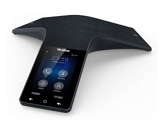

Yealink CP925
Цена носит информационный характер — актуальную стоимость и наличие уточняйте у менеджера.
Yealink CP925 — это сенсорный конференц-телефон корпоративного уровня для конференц-залов малого и среднего размера. СP925 устанавливает новые стандарты качества звука и погружает участников конференции в обсуждение без отвлечения на внешние раздражители. CP925 — это простой в использовании и современный инструмент с широким набором функций для оснащения конференц-зала.
Акустически прозрачная ткань, которой покрыта часть корпуса CP925, непроницаема при любых случайных разливах жидкости, ЖК-экран имеет олеофобное покрытие (препятствующее загрязнению отпечатками пальцев), а удобный и логичный пользовательский интерфейс позволяет легко управлять конференцией. CP925 оснащен 7 встроенными микрофонами, обеспечивающими четкую передачу звука. Кроме того, можно подключить CP925 к мобильному устройству через Bluetooth, чтобы организовать гибридную конференцию.
Минималистичный дизайн, простой в использовании пользовательский интерфейс
Черная акустически прозрачная ткань не препятствует проникновению звука, при этом устойчива к воздействию воды, жира и других загрязняющих веществ. Ультратонкий корпус, устойчивое положение на рабочем столе, а также специальный разъем для скрытой проводки подчеркивает деловой стиль конференц-зала. Простой интерфейс на базе ОС Linux позволяет пользователям начинать конференцию по нажатию одной кнопки.
HD-звук, качественная связь
CP925 имеет Y-образный дизайн, оснащен 6 встроенными микрофонами для передачи звука и 1 микрофоном для шумоподавления. CP925 обеспечивает четкое и естественное восприятие голоса.
Оптимальный набор функций и широкое покрытие
CP925 поддерживает 5-стороннюю конференц-связь, позволяя участникам из разных точек общаться без каких-либо препятствий и помех, а также снижая затраты компании. CP925 можно подключить к мобильным устройствам через Bluetooth или USB-порт (для подключения аналоговых PSTN линий, с помощью адаптера CPN10), реализуя гибридную конференцию.
Гарантия — 18 месяцев.
Характеристики
Функции телефона
- 1 SIP-аккаунт
- 4" сенсорный экран с разрешением 480 x 800
- Удержание вызова, отключение микрофона, DND ("Не беспокоить")
- Запись разговора на USB-накопитель
- 5-сторонняя конференция
- Редактирование правил набора
- Повторный набор, режим ожидания, горячая линия
- Переадресация вызова, трансфер вызова, экстренные вызовы
- Сопряжение с управляющим устройством по Bluetooth, USB для периферии
- Функция мгновенного сбора локальной конференции
- Динамик мощностью 5 Вт
- Встроенный Wi-Fi и Bluetooth
Кодеки и настройки голоса
- Звук в формате Optimal HD
- Smart Noise Filtering (умная фильтрация шума)
- Микрофонный массив из 6 микрофонов, обеспечивающий захват голоса на дистанции до 6 м с зоной покрытия 360°
- Кодеки: G.722.1C, G.722, G.729, G.729A, G.726, G.723, iLBC, PCMA, PCMU
- DTMF: In-band, Out-of-band (RFC 2833), SIP INFO
- Full-duplex (полнодуплексная) громкая связь с AEC (подавление эха)
- VAD (обнаружение активности голоса), CNG (генератор комфортного шума), AEC (подавление эха), PLC (маркирование потери пакета с медиа-данными), AJB (адаптивный буфер для голосовых пакетов), AGC (автоматическая регулировка чувствительности микрофона)
Телефонные книги
- Локальная телефонная книга на 1000 контактов
- Удалённая записная книга XML, поддержка LDAP
- Поиск по записным книгам, импорт/экспорт локальной записной книги, чёрный список
- История вызовов: набранные/принятые/пропущенные/переадресованные
Интеграция с IP-АТС
- Поддержка BLF
- Интерком, пейджинг, напоминание о вызове, музыка на удержании
- Анонимный вызов, отклонение анонимных вызовов
- Голосовая почта, парковка вызова, захват вызова
Настройка и управление
- Настройка телефона: веб-интерфейс/экранное меню/Autoprovision/YDMP
- Загрузка настроек с FTP/TFTP/HTTP/HTTPS-серверов
- Метод обнаружения сервера настроек: DHCP-опция, Zero-sp-touch, TR-069, PnP, Yealink RPS
- Блокировка клавиатуры, управление уровнями доступа (user/admin/var)
- Сброс к настройкам по умолчанию, перезагрузка
- Запись сетевого и системного лога, экспорт и импорт конфигурации
Сетевые характеристики и безопасность
- SIPv1 (RFC2543), SIPv2 (RFC3261)
- Поддержка резервирования SIP-сервера
- NAT/STUN
- Способы вызова: Proxy и peer-to-peer (по IP-адресу)
- Получение IP: статический IP/DHCP
- HTTP/HTTPS-сервер
- Синхронизация времени и даты через SNTP
- UDP/TCP/DNS-SRV (RFC3263)
- QoS: 802.1p/Q tagging (VLAN), Layer 3 ToS DSCP
- Поддержка TLS
- Управление HTTPS-сертификатами
- AES-шифрование конфигурационных файлов
- SRTP (Внимание! В продуктах, предназначенных для стран-участников Таможенного союза, данный функционал отсутствует)
- Поддержка IPv6
Физические характеристики
- 1 х RJ45 Ethernet-порт 10/100 Мбит/с
- 1 x USB-порт 2.0 Type-C
- Встроенный Wi-Fi (2,4/5 ГГц, 802.11 a/b/g/n)
- Встроенный Bluetooth 4.2
- Поддержка PoE (IEEE 802.3af), class 3
- Разъём для замка
- Блок питания: вход AC 100-240 В, выход DC 12 В, 1 А
- Потребление через блок питания: 3,5 - 11 Вт
- Потребление через PoE: 4 - 12 Вт
- Размеры (Ш x Г x В): 285 x 289,5 x 59,1 мм
- Рабочая влажность: 10-90%
- Рабочая температура: -10-40 °C